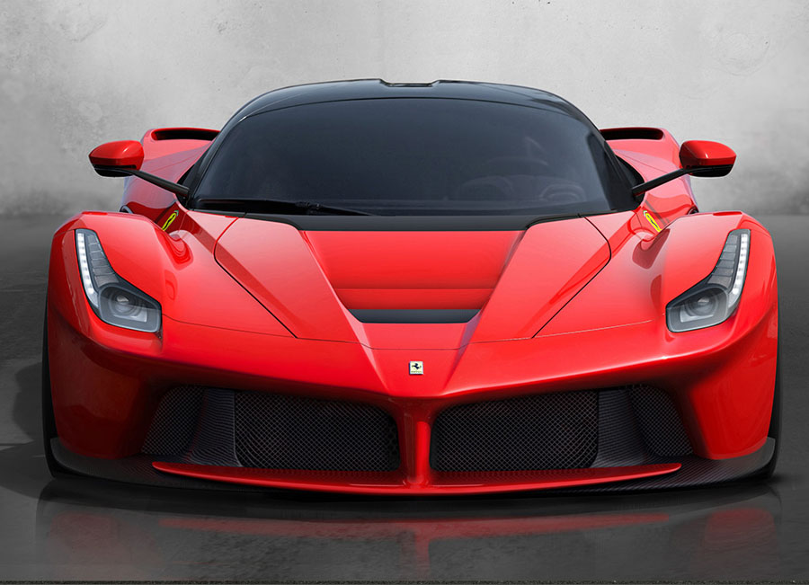

A Closer Look Into the LaFerrari
The cockpit of the LaFerrari is a far departure from traditional road cars; it is more evocative of its motorsports origins but retains the essential driver conveniences. The most notable design feature is that the seat is fixed in position and instead the steering wheel and pedal box adjust to meet the driver’s hands and feet. Secondly, all the mission-critical controls are placed directly in front of the driver, with secondary controls located on the door panel.
 Power train
LaFerrari is outfitted with an ingeniously packaged 788bhp V12 engine that is paired with a 160bhp electric
motor to produce an astonishing power output of 949bhp. The electric motor is mainly utilized at low speeds, which allowed Ferrari engineers to optimize the combustion engine for high-speed performance. By utilizing numerous technological
advancements from their F1 know-how, the engineers were able to achieve unparalleled efficiency and power output. Situated between the engine and motor is a 7-speed, dual clutch gearbox that boasts the fastest shift times of any
system to date. All this has been efficiently packaged with no impact on overall dimensions or wheelbase, and actually lowered the center of gravity of the vehicle..